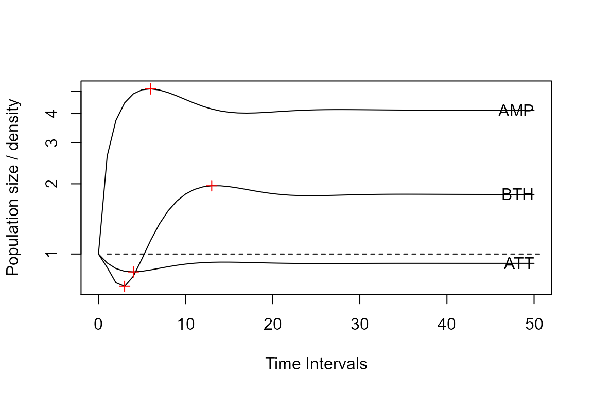

Population dynamics
PopulationDynamics.RmdIntroduction
The following exercises will focus on how to calculate population dynamics using the popdemo package in R. We will work on:
- Deterministic models
- Asymptotic dynamics
- Calculate asymptotic growth, stable demographic distribution, and reproductive value
- Transient dynamics
- Calculate damping ration, amplification and attenuation
- Stochastic dynamics
Preliminaries
We’ll start by loading the popdemo package.
library(popdemo) # Activates the package once installed in your library
#> Welcome to popdemo! This is version 1.3-0
#> Use ?popdemo for an intro, or browseVignettes('popdemo') for vignettes
#> Citation for popdemo is here: doi.org/10.1111/j.2041-210X.2012.00222.x
#> Development and legacy versions are here: github.com/iainmstott/popdemoDeterministic models
Deterministic models are those that have no density-dependence and the population matrix is constant (i.e., vital rates do not change overtime (timestep to timestep)).
For this exercise, we will use the population matrix from the desert tortoise Gopherus agassizzii (See Doak et al. (1994) Ecol. Appl., 4, 446-460). This population is found in the Mojave Desert, USA. The matrix has 8 age and size-based stages.
- Yearling (age 0-1)
- Juvenile 1 (<60 mm)
- Juvenile 2 (90-99mm)
- Immature 1 (100-139mm)
- Immature 2 (140-179mm)
- Subadult (180-207mm)
- Adult 1 (208-239mm)
- Adult 2 (>240mm)
Let’s add the data.
data(Tort)
Tort
#> Yr J1 J2 I1 I2 SA A1 A2
#> Yr 0.000 0.000 0.000 0.000 0.000 1.300 1.980 2.57
#> J1 0.716 0.567 0.000 0.000 0.000 0.000 0.000 0.00
#> J2 0.000 0.149 0.567 0.000 0.000 0.000 0.000 0.00
#> I1 0.000 0.000 0.149 0.604 0.000 0.000 0.000 0.00
#> I2 0.000 0.000 0.000 0.235 0.560 0.000 0.000 0.00
#> SA 0.000 0.000 0.000 0.000 0.225 0.678 0.000 0.00
#> A1 0.000 0.000 0.000 0.000 0.000 0.249 0.851 0.00
#> A2 0.000 0.000 0.000 0.000 0.000 0.000 0.016 0.86What can you tell about the tortoise population from this matrix?
We will use the function project to obtain the population projection of the desert tortoise over a number of timesteps. We will use one matrix containing a constant set of vital rates (i.e., a deterministic model). Remember that projected population dynamics (time series of population size and structure over time) are obtained by multiplying the constant matrix with the initial population vector. First, we will chose a vector at random.
vec <- runif(8)Now we will project to 50 time intervals and standardize the vector to sum to 1 with the argument standard.vec.
Tortp <- project(Tort, vec, time = 50, standard.vec = TRUE)
Tortp
#> 1 deterministic population projection over 50 time intervals.
#>
#> [1] 1.0000000 1.3414329 1.5730979 1.7228448 1.8071117 1.8386331 1.8282053
#> [8] 1.7858563 1.7210223 1.6422158 1.5566242 1.4698610 1.3859253 1.3073359
#> [15] 1.2353755 1.1703830 1.1120444 1.0596501 1.0123041 0.9690778 0.9291126
#> [22] 0.8916789 0.8561998 0.8222513 0.7895454 0.7579061 0.7272417 0.6975187
#> [29] 0.6687387 0.6409210 0.6140888 0.5882608 0.5634460 0.5396424 0.5168363
#> [36] 0.4950047 0.4741166 0.4541360 0.4350236 0.4167392 0.3992426 0.3824953
#> [43] 0.3664605 0.3511039 0.3363936 0.3223002 0.3087961 0.2958558 0.2834555
#> [50] 0.2715727 0.2601859The project function above returns an object containing the overall population size over time.
This object also contains the population vectors of each timestep (the stage or age specific numbers). Rows represent one timestep and each column represents a stage.
vec(Tortp)[1:3,] # Here, we've limited the display to rows 1-3
#> Yr J1 J2 I1 I2 SA A1
#> [1,] 0.1612628 0.1610072 0.03638508 0.18694399 0.1563224 0.08755404 0.1921181
#> [2,] 0.5415183 0.2067553 0.04462042 0.11833555 0.1314724 0.09453419 0.1852935
#> [3,] 0.5383570 0.5049573 0.05610631 0.07812311 0.1014334 0.09367547 0.1812237
#> A2
#> [1,] 0.01840630
#> [2,] 0.01890331
#> [3,] 0.01922154Now, let’s plot the projected population.
plot(Tortp, log ="y")
Extra: Play around with the amount of time to which the model is projected (time argument above) and with your initial vector (vec argument above). What changes do you see (remember asymptotic vs. transient dymanics)?
Asymptotic dynamics
In the long term, a population will reach a stable state and exhibit asymptotic growth. There are three major measures of asymptotic dynamics and are described by the dominant eigen data of the matrix:
- Lambda; dominant eigenvalue: Asymptotic population growth rate
- w; dominant right eigenvector: Proportion of individuals in each life stage when in a stable demographic distribution
- v; dominant left eigenvector: Reproductive value vector
We can calculate these three parameters in the following way:
eigs(Tort, "all")
#> $lambda
#> [1] 0.9580592
#>
#> $ss
#> [1] 0.22166176 0.40584601 0.15463401 0.06507518 0.03841807 0.03086514 0.07178663
#> [8] 0.01171319
#>
#> $rv
#> [1] 0.1954968 0.2615887 0.6865549 1.8019036 2.7148109 4.8029132 4.3813423
#> [8] 5.1237087The ss vector refers to w and rv to v.
w: The vector with the proportion of individuals in each stage once the population reaches a stable state. This vector can help us project a population that has theoretically reached stability. Lets project the tortoise population matrix with this vector (w).
We can plot the projected population and compare a population that has the actual ratios of the life stages (our random initial vector) with a population that has reached stability.
Transient dynamics
Before a population reaches a stable state it goes through a series of oscillations, i.e., it declines/grows at a faster/slower rate than the asymptotic growth. These are called transient dynamics. These dynamics are harder to characterize as they are sensitive to the initial demographic distribution.
Let’s start with standardizations. To calculate deviations from stable growth, it is necessary to standardize the data. For comparative analyses, we often standardize for overall population size (because sizes of different populations in our dataset may vary) and measure transient dynamics relative to asymptotic growth (because different populations, with different matrices, have different growth rates).
The package popdemo has two different standardizations:
- Standardize the initial vector so that it sums to 1
- This is useful to assess the projection relative to initial population size (
standard.vec)
- This is useful to assess the projection relative to initial population size (
- Scale the projection matrix by lambda
- This standardizes asymptotic dynamics and makes it possible to asses transient dynamics
We can plot these standadizations.
Damping ratio
This is the rate of convergence to a stable state. The damping ratio does not tells us the time it will take a population to converge, but rather how fast. The higher the damping ratio, the faster it reaches convergence.
Calculate the damping ratio for the tortoise population.
dr(Tort)
#> [1] 1.141954Transient indices
These are the maximum amplification and attenuation.
Comparable points at which to measure transient dynamics don’t have to be at the same time of the projection. Maximum amplification and maximum attenuation describe the largest and smallest population sizes (relative to long-term growth λ). Maximum amplification and maximum attenuation can occur at any point along the projection. Some populations only have a maximum amplification (because they never attenuate), some only have a maximum attenuation (because they never amplify), and some have both.
If we want to compare several different population structures, then it’s possible to project several simultaneously.
Here, we will: * Create two extra vectors * One that amplifies and one that attenuates * Bind these with the random vector into a matrix with 3 columns * Project the model with this matrix passed to the vec argument * Calculate maximum amplification and attenuation for the extra vectors * Plot these on the graph
# We'll start by creating three example populations
TortAMP <- c(1, 1, 2, 3, 5, 8, 13, 21) # A population that amplifies
TortATT <- c(21, 13, 8, 5, 3, 2, 1, 1) # A population that attenuates
TortBTH <- c(0, 0, 0, 1, 0, 0, 0, 0) # A population that does both
# Next, we'll bind them together
Tortvec3 <- cbind(AMP = TortAMP, ATT = TortATT, BTH = TortBTH)
Tortvec3
#> AMP ATT BTH
#> [1,] 1 21 0
#> [2,] 1 13 0
#> [3,] 2 8 0
#> [4,] 3 5 1
#> [5,] 5 3 0
#> [6,] 8 2 0
#> [7,] 13 1 0
#> [8,] 21 1 0
# Let's project to 50 time intervals and standardize the vector to sum to 1 as we did in the earlier example
Tortp3 <- project(Tort, Tortvec3, time = 50,
standard.A = TRUE, standard.vec = TRUE)
# Now, we'll define the points for amplification and attenuation
max3 <- apply(Tortvec3[,c(1,3)], 2, maxamp, A = Tort)
max3t <- apply(Tortvec3[,c(1,3)], 2, function(x){
maxamp(vector = x, A = Tort, return.t = TRUE)$t})
min3 <- apply(Tortvec3[,c(2,3)], 2, maxatt, A = Tort)
min3t <- apply(Tortvec3[,c(2,3)], 2, function(x){
maxatt(vector = x, A = Tort, return.t = TRUE )$t})
# And finally, let's plot
plot(Tortp3, log = "y"); lines(Tortpws, lty = 2)
points(c(max3t, min3t),
c(max3, min3),
pch = 3, col = "red")